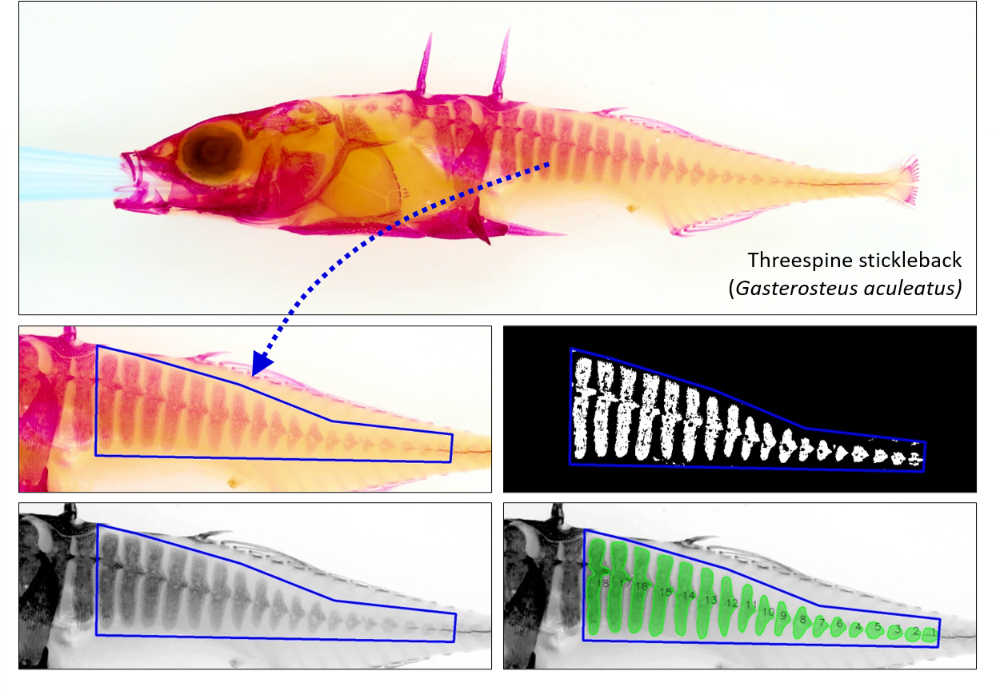
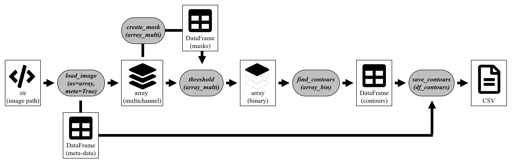
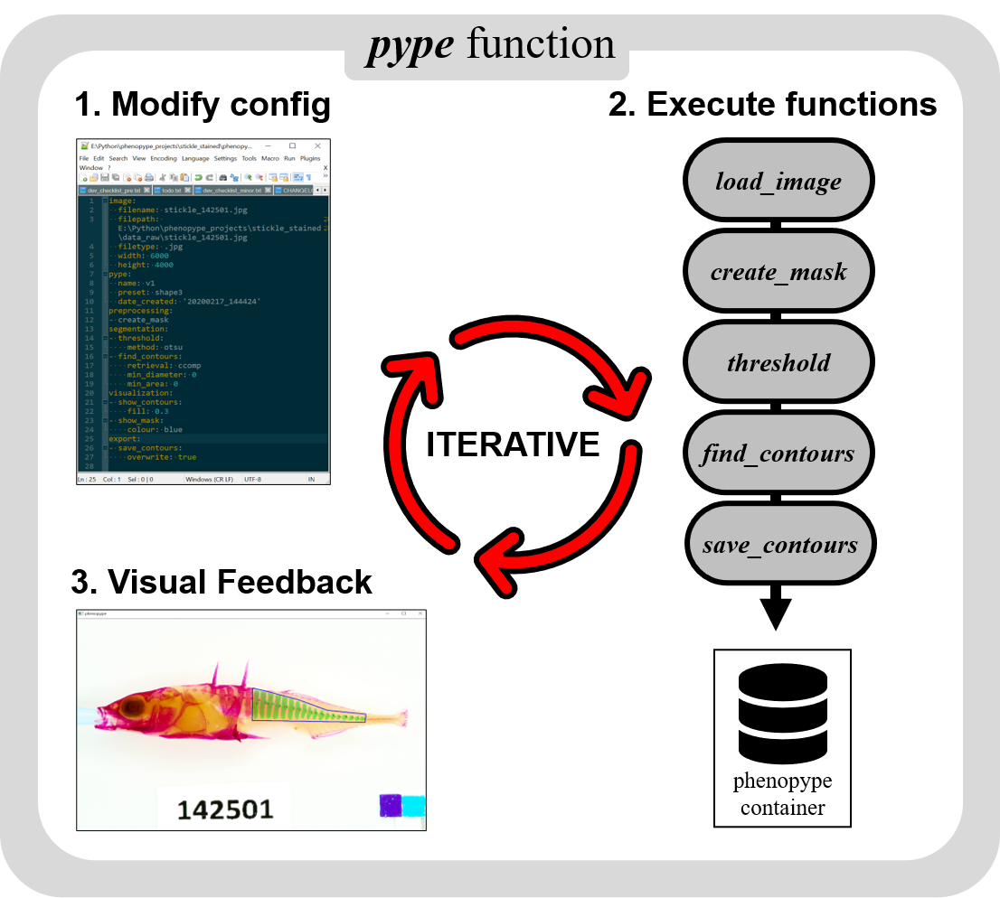

Tutorial 3: Image analysis workflow¶
Analysis of scientific images can be an iterative process that may require users to go back and forth, trying different processing steps and check how to improve results. Later, when the best functions and appropriate settings are found and efficient data collection has priority, image analysis should be efficient and with minimal user input to increase throughput and reproducibility. In phenopype, users can choose between two different workflows that are useful for different stages in the process of scientific image analysis:
Workflow |
Use case |
Operation principle |
Code explicitness |
Data reproducibility |
|---|---|---|---|---|
Low throughput |
“prototyping” - self education and evaluation on single images and small datasets |
image analysis functions are written and stored in Python |
high |
low |
High throughput |
“production” - default workflow for larger image datasets |
images analysis functions are written and stored in YAML format |
low |
high |
In the low throughput workflow, users write a function stack in directly in Python code. This is recommended for users who wish to familiarize themselves with the basic principles of computer vision or when working with only a handful of images. In contrast, the high throughput workflow is for production stage, when image analysis should be efficient and data collection reproducible for other users and scientists. In this tutorial you will learn about the differences between the two workflows.
Further resources related to the high throughput workflow
Instructions for testing each workflow¶
Here the goal is to measure lateral armor plating in threespine stickleback (Gasterosteus aculeatus). First we need to draw a mask around posterior region that contains the plates. For that step you should select the boundaries around the area of interest, perform a thresholding operation inside the mask, and retrieve the contours inside. The procedure to extract bone-plate area is the same in all workflows, but workflows differ in the amount of explicit Python code, and in reproducibility.

Fig. 1: Workflow demonstration using a stained stickleback (Gasterosteus aculeatus) stained with alizarin red. Traits of interest are bone-plate area and shape, and, within the detected plates, pixel intensities that denote bone-density. First, draw a map, the remaining steps are fully automatic.
Low throughput workflow¶
In the low throughput workflow, the output of every function needs to be explicitly passed on to the next step. First we need to use load_image, which imports the file as a three-channel numpy array (ndarray), together with image meta data (file name, dimensions, etc.) as a pandas DataFrame. After drawing masking the image to only include the area of interest (i.e. the bone plates), we passt the array and the mask on to the threshold function. Thresholding will convert a three
dimensional array into a one dimensional binary array of the same width and hight (white denoting foreground, black denoting background). This array needs to be passed on to the find_contours function, which will return a dictionary with the detected contours (i.e. the white areas). Finally, the dataframe can be exported as a csv file with save_contours. By passing on the initially created meta-data, this function will also included filename and image dimensions in the exported csv.
 Fig. 2: Sequence of image analysis in phenopype’s low throughput workflow. Boxes indicate data/information, grey bubbles indicate image phenopype functions.
[1]:
import phenopype as pp
filepath = r"images/stickle1.jpg"
## load image as array, supply image_data (DataFrame containing meta data)
image, image_data = pp.load_image(filepath, df = True)
Next, run create_mask - use left mouse clicks to trace an outline around some of the fish plates, right mouse to remove erroneous points, and finish masking the region with Enter. Note that the connection between the last two points is drawn automatically, no need to click on the starting point. Then run all remaining code cells on by one, we will visualize the result at the end.

[2]:
## draw mask
mask = pp.preprocessing.create_mask(image, tool="polygon")
- creating mask
[3]:
## thresholding converts multichannel to binary image
image_bin = pp.segmentation.threshold(image, method="adaptive",
channel="red", blocksize=199,
constant=5, df_masks=mask)
- including pixels from 1 drawn masks
[4]:
## detect contours ony binary image
contours = pp.segmentation.find_contours(image_bin, df_image_data=image_data,
retrieval="ext", min_area=150)
- found 6 contours that match criteria
[5]:
## export contours to csv
pp.export.save_contours(contours, dirpath = r"_temp/output")
Save folder _temp/output does not exist - create?.y
- contours saved under _temp/output\contours.csv.
[6]:
contours
[6]:
| filename | width | height | contour | center | diameter | area | order | idx_child | idx_parent | coords | |
|---|---|---|---|---|---|---|---|---|---|---|---|
| 0 | stickle1.jpg | 2400 | 1600 | 1 | (1759, 398) | 50 | 741 | parent | -1 | -1 | [[[1747, 381]], [[1747, 382]], [[1746, 383]], ... |
| 1 | stickle1.jpg | 2400 | 1600 | 2 | (1678, 386) | 107 | 2550 | parent | -1 | -1 | [[[1636, 354]], [[1635, 355]], [[1635, 356]], ... |
| 2 | stickle1.jpg | 2400 | 1600 | 3 | (1611, 370) | 61 | 863 | parent | -1 | -1 | [[[1611, 340]], [[1611, 341]], [[1610, 342]], ... |
| 3 | stickle1.jpg | 2400 | 1600 | 4 | (1580, 373) | 88 | 1268 | parent | -1 | -1 | [[[1579, 329]], [[1579, 332]], [[1578, 333]], ... |
| 4 | stickle1.jpg | 2400 | 1600 | 5 | (1534, 364) | 119 | 3660 | parent | -1 | -1 | [[[1516, 307]], [[1516, 309]], [[1517, 310]], ... |
| 5 | stickle1.jpg | 2400 | 1600 | 6 | (1437, 352) | 166 | 9214 | parent | -1 | -1 | [[[1390, 285]], [[1390, 286]], [[1391, 287]], ... |
Next we can visualize the contours found by find_contours. Note that we first have to draw them explicitly on a “canvas”, i.e. a background for visualization. We could draw them on the original image, but then it would be unusable for further work. It is therefore good pracctice to make a copy using the copy library:
[7]:
import copy
## copy the image
canvas = copy.deepcopy(image)
## draw detected contours onto canvas
image_drawn = pp.visualization.draw_contours(canvas, df_contours=contours)
## show convas
pp.show_image(image_drawn)
While analyzing the image, you can explore output from the different steps to see what is going on. For example, the binary image resulting from the thresholding:
[8]:
pp.show_image(image_bin)
High throughput worflow¶
This is the default workflow to analyse medium and large image datasets in phenopype. Here, instead of writing down our analysis as a sequence of Python code, as we did in the low throughput workflow, we supply the same functions through a configuration file in human readable YAML format. This file can then be loaded by phenopype’s pype class, which initiates the analysis by triggering three actions:
open the YAML configuration file in the default OS text editor
parse the contained functions and execute them in the sequence
open a HighGUI window showing the processed image, updates with every step
After one iteration of all steps, users can evaluate the results and decide to modify the opened configuration file (e.g. either change function parameters or add new functions), and run pype again, or to terminate the pype-run and save all results. The processed image, any extracted phenotypic information, as well as the modified config-file is stored inside a phenopype container, and inside a directory specified with dirpath.

IMPORTANT - read before continuing:
Window control is as covered in Tutorial 2). Don’t use the close button, make sure that the window is selected / highlighted when you use the key combinations to close or interact with it:
Enter- finish an interactive step / function inpype-mode (e.g. creating a mask)Ctrl+Enter- close and finish a window inpype-modeEsc- close a window and quit the Phenoype process that invoked it (e.g. aforloop - see Tutorial 4). This may also work when the process is frozen.
At the current stage of development, phenopype cannot handle errors resulting from incorrect yaml syntax (e.g. missing spaces or wrong indentation). Consult the section YAML-syntax (below) to learn how to correctly modify the configuration files.
The
pypeattempts to facilate rapid processing by calling some functions automatically (e.g. to visualize and export the results). Consult the pype section in the API to learn about the most important aspects of thepypefunction.
[15]:
import phenopype as pp
filepath = r"images/stickle1.jpg"
pype_demo = pp.pype(image=filepath, # input - can be also an array or a phenopype directory
dirpath = r"_temp/output", ## directory where output is stored (folder needs to exist)
name="demo", # name of the pype routine, appended to all results-files
template="tut3" # template for the analysis - you can create your own!
)
Directory to save phenopype-container output set to parent folder of image:
E:\git_repos\phenopype\tutorials\images
New pype configuration created (tut3.yaml) from phenopype template:
e:\git_repos\phenopype\phenopype\templates\tut3.yaml
------------+++ new pype iteration 2021:03:12 16:44:31 +++--------------
Nothing loaded.
PREPROCESSING
create_mask
- creating mask
SEGMENTATION
threshold
- including pixels from 1 drawn masks
find_contours
- found 6 contours that match criteria
VISUALIZATION
select_canvas
- invalid selection - defaulting to raw image
draw_contours
draw_masks
drawing mask: mask1
EXPORT
save_contours
- contours saved under _temp/output\contours_demo.csv.
save_canvas
- canvas saved under _temp/output\canvas_demo.jpg.
=== AUTOSAVE ===
save_masks
- masks saved under _temp/output\masks_demo.csv.
------------+++ finished pype iteration +++--------------
-------(End with Ctrl+Enter or re-run with Enter)--------
------------+++ new pype iteration 2021:03:12 16:44:40 +++--------------
Nothing loaded.
PREPROCESSING
create_mask
- mask with label mask1 already created (edit/overwrite=False)
SEGMENTATION
threshold
- including pixels from 1 drawn masks
find_contours
- found 6 contours that match criteria
VISUALIZATION
select_canvas
- invalid selection - defaulting to raw image
draw_contours
draw_masks
drawing mask: mask1
EXPORT
save_contours
- contours saved under _temp/output\contours_demo.csv (overwritten).
save_canvas
- canvas saved under _temp/output\canvas_demo.jpg (overwritten).
=== AUTOSAVE ===
save_masks
- masks saved under _temp/output\masks_demo.csv (overwritten).
------------+++ finished pype iteration +++--------------
-------(End with Ctrl+Enter or re-run with Enter)--------
TERMINATE
Now all results and intermediate data results are saved under "_temp/output", but also contained in a container that is part of the pype-object which we called pype_demo. You can use it to access e.g. the binary images, as we did in the other workflows above, and visualize it manually:
[16]:
pp.show_image(pype_demo.container.image_bin)
Of course you can modify the configuration files to change the outcome. For instance, try to change the blocksize argument in threshold to 49, or 499, and see what happens. If you do so while the window is open, phenopype will update the image window and show the updated results.
YAML syntax¶
The configuration files needed to run the pype are written in yaml (a recursive acronym for “YAML Ain’t Markup Language”). In principle, these are just text files that follows a specific set of rules for indentation and separation. Let’s look at the configuration template for this tutorial that we used above - we can look at all templates using pype_config_templates, and inspect a specific template using show_config_template:
[17]:
import phenopype as pp
pp.pype_config_templates
[17]:
{'demo.yaml': 'e:\\git_repos\\phenopype\\phenopype\\templates\\demo.yaml',
'ex1.yaml': 'e:\\git_repos\\phenopype\\phenopype\\templates\\ex1.yaml',
'ex2.yaml': 'e:\\git_repos\\phenopype\\phenopype\\templates\\ex2.yaml',
'ex3.yaml': 'e:\\git_repos\\phenopype\\phenopype\\templates\\ex3.yaml',
'ex5_1.yaml': 'e:\\git_repos\\phenopype\\phenopype\\templates\\ex5_1.yaml',
'ex5_2.yaml': 'e:\\git_repos\\phenopype\\phenopype\\templates\\ex5_2.yaml',
'ex6.yaml': 'e:\\git_repos\\phenopype\\phenopype\\templates\\ex6.yaml',
'ex7.yaml': 'e:\\git_repos\\phenopype\\phenopype\\templates\\ex7.yaml',
'ex8_1.yaml': 'e:\\git_repos\\phenopype\\phenopype\\templates\\ex8_1.yaml',
'ex8_2.yaml': 'e:\\git_repos\\phenopype\\phenopype\\templates\\ex8_2.yaml',
'landmarks1.yaml': 'e:\\git_repos\\phenopype\\phenopype\\templates\\landmarks1.yaml',
'landmarks2.yaml': 'e:\\git_repos\\phenopype\\phenopype\\templates\\landmarks2.yaml',
'tut3.yaml': 'e:\\git_repos\\phenopype\\phenopype\\templates\\tut3.yaml'}
[18]:
pp.show_config_template("tut3")
SHOWING BUILTIN PHENOPYPE TEMPLATE tut3.yaml
- preprocessing:
- create_mask:
tool: polygon
- segmentation:
- threshold:
method: adaptive
blocksize: 199
constant: 5
channel: red
- find_contours:
retrieval: ext
min_diameter: 0
min_area: 150
- visualization:
- select_canvas:
canvas: image
- draw_contours:
line_width: 2
label_width: 1
label_size: 1
fill: 0.3
- draw_masks
- export:
- save_contours:
overwrite: true
- save_canvas:
resize: 0.5
overwrite: true
The text inside the yaml configuration files is parsed by Python from top to bottom and converted back to Python code in the background, i.e. to phenopype modules and functions. Indentation hierarchy is as follows:
The first level without any indentation, e.g.
-preprocessingor- segmentation, denote from the module that a function is part of.The second level with two-space indentation before the hyphen, e.g.
- thresholdor- find_contoursare functions that are loaded from thesegmentationmodule.The third level without hyphens, e.g.
method: otsuandblocksize: 99, are arguments passed on to the function.
Following this notation, the yaml parser in Python interprets the first item in segmentation as follows:
pp.segmentation.threshold(image, method="adaptive", blocksize=199, constant=5, channel="red")
When running the pype routine, image is automatically loaded and passed to all following functions. You can add or remove functions as you like. Note in the hyphenated first two levels you can specify modules and functions as many times as you want (- is the yaml list notation). When adding or modifying modules and functions, it is important to keep in mind that the function stack is executed sequentially. So, if you want to perform a morphology operation on a binary images, it
should come after and not before the main segmentation function (in this case threshold).
Here are the most important rules for YAML syntax:
indentation rules:
0 spaces for modules
2 spaces + hyphen+space in front of functions
4 spaces in front of arguments
separation rules:
modules and functions with arguments are followed by a colon (
:) and a new linefunctions without specified arguments don’t need a colon
arguments are followed by a colon, a space and then the value
modules and functions can be emtpy (see
- draw_masksabove), but function arguments cannot be emtpy (e.g.overwrite:needs to betrueorfalse)as per Python syntax, optional function arguments can, but don’t have to be specified and the functions will just run on default values
functions can be added multiple times, but sometimes their output may be overwtritten (e.g.
- thresholdmakes sense only once, but- blurmay be used in multiple locations)
To learn how to analyze entire data sets with the high-throughput method, move on to the next Tutorial 4.
[ ]: